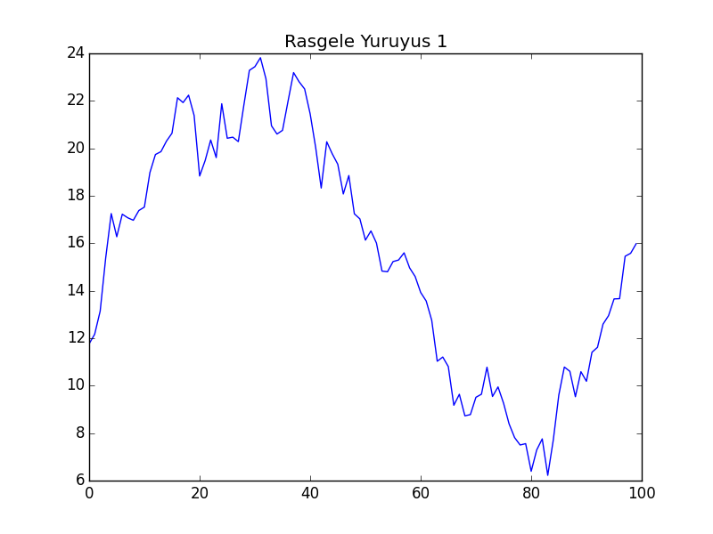
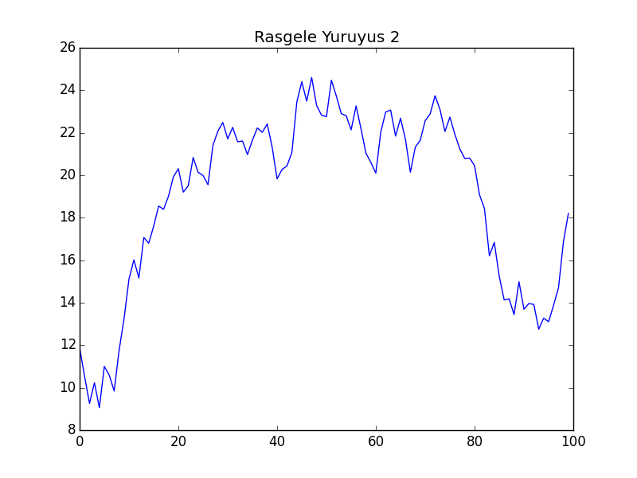
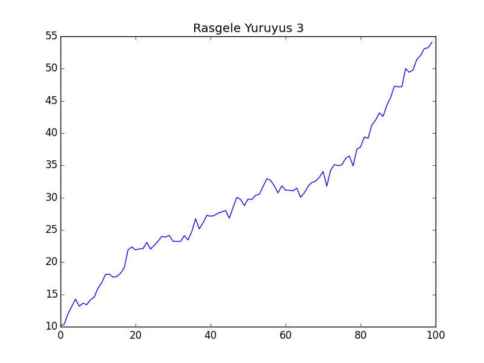
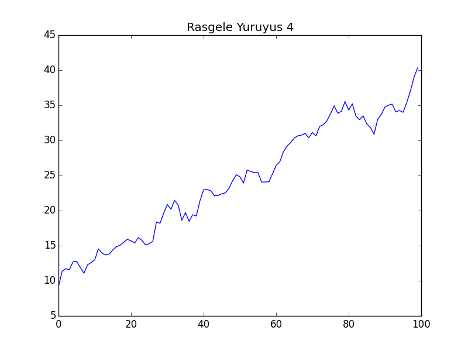
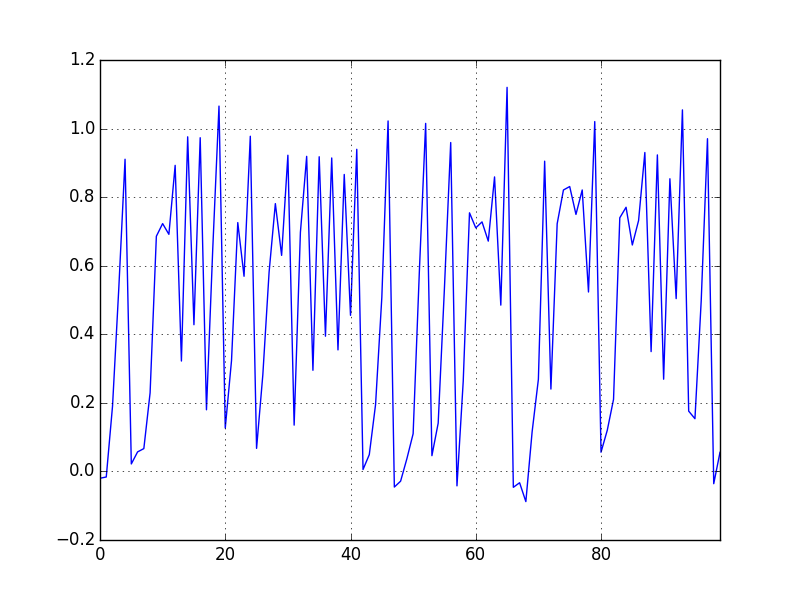
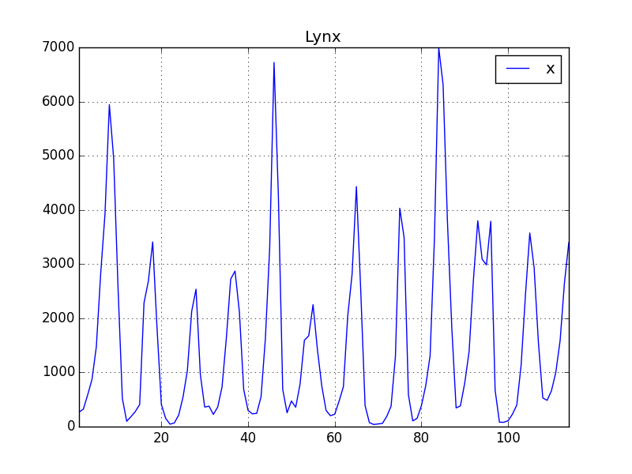
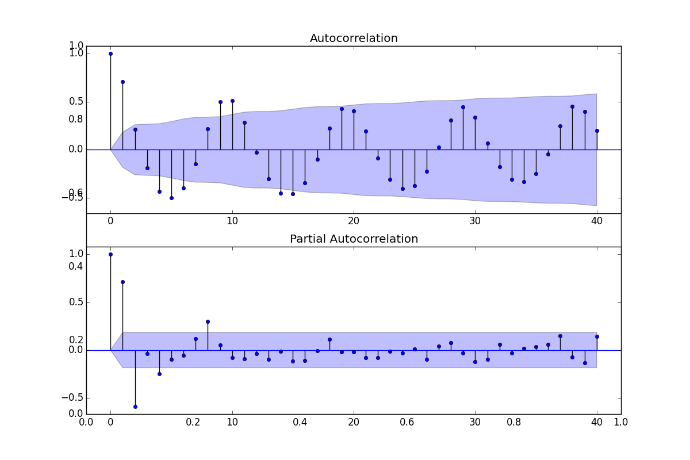
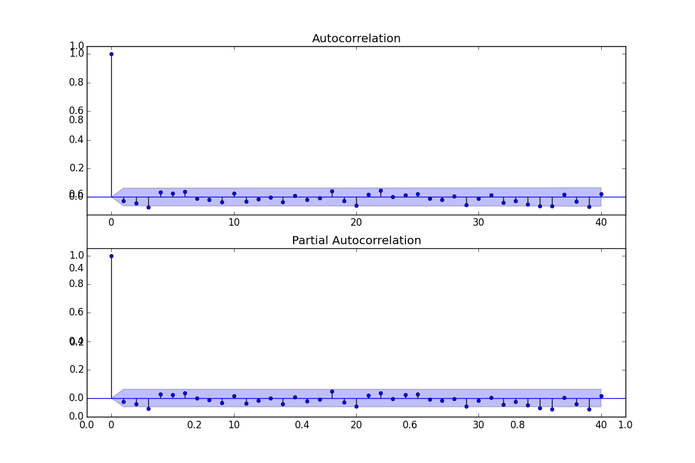
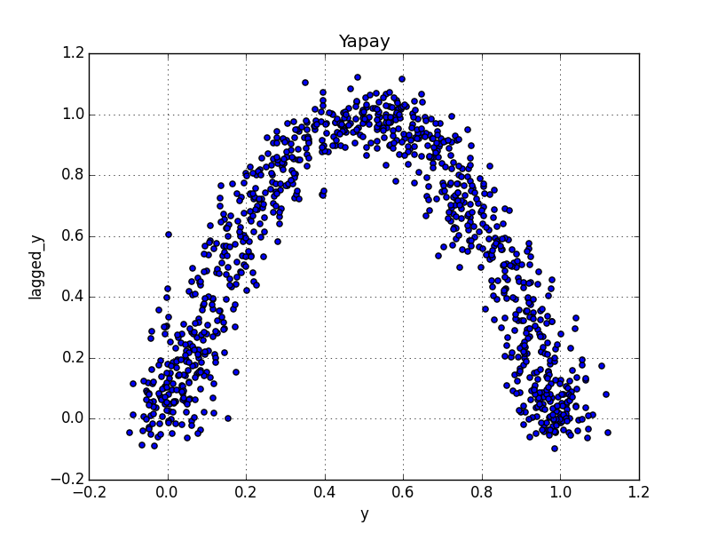
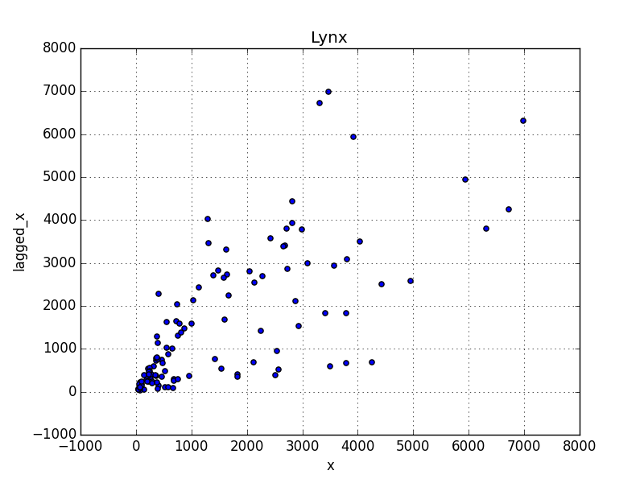

Rasgele Yürüyüş (Random Walk)
Senet fiyatlarının rasgele yürüyüşe göre hareket ettiği söylenir. Modelin bir şekli
$$ y_t = y_{t-1} + z $$
ki $z \sim N(0,\sigma)$. Formülü alttaki şekliyle görürsek daha açık olabilir, $Z_1,Z_2,..,$ bağımsız özdeşçe dağılmış (independently, identically distributed -iid-), ortalaması $\mu$, standart sapması $\sigma$ olan dağılımlar olsun, ve herhangi bir başlangıç noktası $X_o$'dan $t$ anında gelinen nokta
$$ X_t = X_0 + Z_1 + Z_2 + ... + Z_t , t \ge 1$$
olarak belirtilebilir. Her $t$ anında bir rasgele değişkene göre bir yere savruluyoruz. Modele dikkat, önceki veri noktası ile bir korelasyonumuz yok, her noktada zar atılıyor, başka hiçbir şey yapılmıyor.
$X_t$ bu durumda bir rasgele yürüyüştür, ve adımları $Z_1,Z_2,..$'dir. Eğer adımlar normal olarak dağılmış ise, sürece normal rasgele yürüyüş adı verilir. $X_0$ verildiği / bilindiği durumda $X_t$'nin beklentisi ve varyansı,
$$ E(X_t|X_0) = X_o + \mu t $$
$$ Var(X_t|X_0) = \sigma^2 t $$
Varyans için bağımsızlık durumunda $Var(X+Y) = Var(X)+Var(Y)$ olduğunu hatırlayalım, varyans toplamları $\sigma t$ olur, sabit $\sigma$ varyans dışına karesi alınmış olarak çıkar. Sabit $X_0$ zaten yokolur, onun varyansı yoktur.
Bu modelin bir diğer ismi Brown Hareketi (Brownian Motion), $\mu$ parametresi kaymadır (drift), tüm zaman serisine bir genel yön verir. Kaymanın tanımlandığı duruma Kaymalı Brown Hareketi (Brownian Motion with Drift) ismi verilir.
Simüle edelim, iki tane $\mu=0$, iki tane $\mu=0.5$ ile.
import statsmodels.api as sm
import pandas as pd
np.random.seed(0)
def random_walk(i,mu=0):
Z_s = np.random.normal(loc=mu,scale=1.0,size=100)
X_0 = 10
X_t = X_0 + Z_s.cumsum()
plt.plot(X_t)
plt.title('Rasgele Yürüyüş %d' % i)
plt.savefig('tser_stoc_0%d.png' % i)
plt.hold(False)
random_walk(1)
random_walk(2)
random_walk(3,mu=0.5)
random_walk(4,mu=0.5)
   
Görüldüğü gibi rasgele yürüyüş üretimini sağlayan çağrıya $\mu$ haricinde (bir de dokümantasyon amaçlı bir indis) haricinde başka hiçbir parametre vermedik, yani aynı kod arka arkaya dört kez işledi, ama herbirinde aynı başlangıç değeri olmasına rağmen tamamen farklı görüntüler çıktı. Görüntüler borsadaki senet fiyatlarını da andırıyor!
Her adımda Gaussian gürültü eklendiği için veri analizi yaparken Guassian'lığı fiyatların getirisi / farkında görmek mümkündür. Günlük bazda diyelim artış / azalışın histogramını alırsak, ünlü can eğrisini elde ederiz. Tabii şunu da eklemek lazım, değişimin dağılımı "tam olarak" Gaussian kabul edilmiyor, bu dağılımın "etekleri daha kabarıktır", yani ekstrem değerler Gaussian'a göre daha muhtemeldir. Bu dağılımın Öğrenci t (Student t) dağılımı olduğu söylenir. Fakat kolaylık açısından, kriz şartlarına dikkat etmek koşuluyla, Gaussian kullanılabilir.
Bağımlılık
Genel İstatistik öğrenirken çoğunlukla veri noktalarının birbirinden bağımsız olduğunu farzettik, mesela regresyon durumunda eğer $X_i$ biliniyorsa her $Y_i$ birbirinden bağımsızdı, ayrıca $X_i$'ler birbirinden bağımsızdı. Çok değişkenli durumda veri noktalarının öğelerinin birbiriyle çetrefil şekilde alakalı olma durumunda bile veri noktalarının birbirinden bağımsız olduğunu farzettik. Şimdi bu faraziyeyi gevşeteceğiz, yani ayrı veri noktaları arasında bağımlılık durumuna bakacağız.
Bağımlı verilere en iyi örnek zaman serileridir, ve bu veri tipi aynen isminin çağrıştırdığı gibi bir değerin bir zaman süreci içinde kaydedilmiş değerleri olacaktır. İstatistik uygulamalarında bu durum çoğunlukla bir $X$ değişkeninin $t$ anından başlanarak eşit zaman aralıklarında, mesela $h$ aralıklarıyla değerinin kaydedilmesiyle ortaya çıkabilir, $X_t,X_{t+h},X_{t+2h},...$ gibi..
Altta iki tipik zaman serisi görüyoruz. Bunlardan ilki yapay olarak üretilmiş, ikincisi Kanada'nın bir bölgesinde her sene yakalanan lynx (orta boylu bir kedi türü) sayısı baz alınarak yaratılmış. Bu verilerin dalgalanış şekilleri, kabaca gidişatları, vs. aslında birbirlerine çok benziyor.
def logistic_map(x,r=4): return r*x*(1-x)
def logistic_iteration(n,x_init,r=4):
x = [0 for i in range(n)]
x[0] = x_init
for i in range(n-1): x[i+1] = logistic_map(x[i])
return x
n = 1000
x = logistic_iteration(n, x_init=0.01)
y = x + np.random.normal(size=n,loc=0.,scale=0.05)
plt.title('Yapay Veri')
df_artificial = pd.DataFrame()
df_artificial['y'] = y
df_artificial.y[:100].plot()
plt.savefig('tser_stoc_05.png')

import pandas as pd
df = pd.read_csv('lynx.csv',index_col=0)
df.plot()
plt.title('Lynx')
plt.savefig('tser_stoc_06.png')

Soru: Yapay veriyi üretirken niye lojistik harita (logistic map) kullandık? Cevap: Hoca [1] herhalde hem birbirine bağımlı noktalar yaratmak, hem de onların biraz "kaotik" olmasını istedi, ki lojistik harita kaos matematiğinde iyi bilinen bir fonksiyondur.
Zaman serisi analizinde yapmaya çalıştığımız İstatistiğin geri kalanından bize tanıdık: önümüzde gördüğümüz zaman serisini, o seriyi üreten, görmediğimiz, yarı-rasgele ("stochastic") bir süreçten alınmış bir yansıma / oluş (realization) olarak görmek, önümüzdeki veriyi bu süreç hakkında tahminler (çıkarsama / inference) yapmak için kullanmak, ve bu tahminlerin, rasgeleliğini açıkça belirledikten sonra güvenilir olması için uğraşmak. İşimizi zorlaştıran her gözlemin / veri noktasının birbiri ile bağlantılı olması; diğer yandan çoğu zaman üzerinde çıkarsama yapmak istediğimiz şey de aslında bu bağlantının ta kendisi.
Notasyon
Eşit aralıklı örneklenmiş zaman serisini göstermek için indeks olarak zamanın kendisini kullanmak yerine (mesela 1920 senesinde, 1921 senesinde, vs demek yerine) her öğenin seri içindeki yerini kullanmak daha rahattır, $X_1,X_2,..$ gibi. Buradan hareketle bir kısayol notasyonu şudur: bir zaman blokunu göstermek için $X_i^j = (X_i,X_{i+1},...,X_{j-1},X_j)$.
Durağanlık (Stationarity)
Eski dünyamızda durum nasıldı? IID veri noktalarımız vardı, bu bize analizde bazı faydalar sağlıyordu. Zaman serileri için de benzer bir aynılık özelliğinin olması iyi olmaz mıydı? Böyle bir özellik var, ve ismi durağanlık. Kelimenin anlamı zaman serisinin hiç değişmediği anlamına gelmiyor tabii, onun {\em dağılımının} değişmediği anlamına geliyor.
Daha kesin bir şekilde belirtmek gerekirse, eğer tüm $k,t$ için $X_1^k$ ve $X_t^{t+k-1}$ aynı dağılıma sahipse bu zaman serisi $X$'in güçlü durağan (strongly stationary), ya da kesin durağan (strictly stationary) olduğu söylenir, yani $k$ büyüklüğündeki blokların dağılımı zamana bağlı değildir (time-ınvariant). Tekrarlamak gerekirse bu tüm blokların aynı değerlere sahip olduğu anlamına gelmez, sadece aynı dağılıma sahip olduğu anlamına gelir.
Çoğunlukla finans zaman serileri durağan olmaz, ama serinin değişimi, yani $t$ ile $t-1$ arasındaki fark durağan olabilir, arada bir log transform da da gerekebilir. İstatistiki modelleme açısından bu işlemlerin pek negatif bir etkisi yoktur, her halükarda ise yarar bir model elde ederiz.
Durağan süreçlerin güzel tarafı şudur, onları çok az parametre ile modelleyebilirsiniz. Mesela her $X_t$ için farklı bir beklentiye (expectation) ihtiyaç yoktur, hepsinin beklentisi aynıdır, $\mu$. Bu demektir ki $\mu$'yu $\bar{X}$ ile doğru doğru bir şekilde kestirmek (estimate) mümkündür.
Eh bir "güçlü" durağanlık varsa, herhalde bir "zayıf" durağanlık ta olmalı.. Hakikaten de bu var. Zayıf durağanlık için tek gereken şartlar $E(X_1) = E(X_t)$ ve $Cov(X_1,X_k) = Cov(X_t,X_{t+k-1})$ olması. Dikkat, bu şart için bloklar üzerinden değil tek veri noktaları üzerinden bir beyan yapıyoruz. Doğal olarak güçlü durağanlık aynı zamanda zayıf durağanlık ta olduğunu söyler (bunu egzersiz olarak doğrulayabilirsiniz) , fakat çoğunlukla bu eşitlik ters yönde geçerli değildir.
Kendisiyle Korelasyon (Autocorrelation)
Zaman serileri çoğunlukla zincirleme olarak bağlantılıdır, yani $X_t$ noktası kendinden önceki ve sonraki tüm değerler ile bağlantılıdır. Fakat bu bağlantı her mesafede aynı etkide değildir, çoğunlukla bir bağlantı kaybı (decay of dependence) durumu sözkonusudur (bazen korelasyon kaybı -decay of correlations- ismi de veriliyor), yani $h \to \infty$ iken $X_t,X_{t+h}$ değişkenleri birbirinden gittikçe daha çok neredeyse tam bağımsız hale gelir [kelimelendirme kritik, hoca tam bağımsız olur demiyor, çok az bağımlılık hala kalabilir, ama aralık büyüdükçe, hatta sonsuzluğa yaklaştıkça bağımsızlık artar, neredeyse tam bağımsızlık haline gelir].
Bu durumu ölçmenin bilinen en eski yöntemi kendisiyle koveryans (dikkat korelasyon değil) ölçütüdür,
$$ \gamma(h) = Cov(X_t,X_{t+h}) $$
Aynı şekilde kendisiyle korelasyon (autocorrelation) da kullanabilirdik,
$$ \rho(h) = \frac{Cov(X_t,X_{t+h}) }{Var(X_t) } = \frac{\gamma(h)}{\gamma(0)} $$
Korelasyon tanımından üstteki ilk eşitliğe nasıl geldik? Korelasyon bilindiği gibi
$$ \frac{Cov(X_t,X_{t+h}) }{\sqrt{Var(X_t)}\sqrt{Var(X_{t+h})} } $$
Daha önceki zayıf durağanlık tanımından,
$$ Cov(X_1,X_k) = Cov(X_t,X_{t+k-1}) $$
Eğer $k=1$ olsaydı,
$$ Cov(X_1,X_1) = Cov(X_t,X_t) = Var(X_1) = Var(X_t)$$
Bu ifadenin her $t$ için doğru olması gerektiği için $Var(X_t) = Var(X_{t+h})$ diyebiliriz. O zaman korelasyon şu hale gelir,
$$ \frac{Cov(X_t,X_{t+h}) }{\sqrt{Var(X_t)}\sqrt{Var(X_t)} } = \frac{Cov(X_t,X_{t+h}) }{Var(X_t)} $$
Sağ taraftaki eşitliğe gelelim: sadece $\gamma$ formu kullanmaya uğraşalım, $h=0$ dersek $\gamma(0) = Cov(X_t,X_{t+0}) = Cov(X_t,X_t)$ elde ediliyor ve bilindiği gibi $Var(X_t)=Cov(X_t,X_t)$. O zaman
$$ \frac{Cov(X_t,X_{t+h}) }{Var(X_t)} = \frac{\gamma(h)}{\gamma(0)} $$
Daha önce belirttiğimiz gibi çoğu zaman serisi için $h \to \infty$ $\gamma(h) \to 0$.
Python Pandas ile korelasyon grafiği şöyle basılır,
fig = plt.figure(figsize=(12,8))
plt.hold(True)
ax1 = fig.add_subplot(211)
fig = sm.graphics.tsa.plot_acf(df.values.squeeze(), lags=40, ax=ax1)
ax2 = fig.add_subplot(212)
fig = sm.graphics.tsa.plot_pacf(df, lags=40, ax=ax2)
plt.savefig('tser_stoc_07.png')

fig = plt.figure(figsize=(12,8))
plt.hold(True)
ax1 = fig.add_subplot(211)
fig = sm.graphics.tsa.plot_acf(df_artificial.values.squeeze(), lags=40, ax=ax1)
plt.hold(True)
ax2 = fig.add_subplot(212)
fig = sm.graphics.tsa.plot_pacf(df_artificial, lags=40, ax=ax2)
plt.savefig('tser_stoc_08.png')

Üstteki her iki verinin de kendisiyle korelasyonunu görüyoruz. İlginç bir durum ortaya çıktı, yapay zaman serisinin kendisiyle korelasyonu neredeyse hep sıfır etrafında, yani hangi aralığı baz alırsak alalım, iki veri noktası arasındaki bağlantı çok az. Bu durum serinin ilk grafiğini düşününce garip geliyor. Hakikaten bir acaiplik var, bu şeride bir takım bağlantılar olduğunu $X_{t+1},X_t$ grafiğini basarak bile görebiliriz,
df_artificial['lagged_y'] = df_artificial.y.shift(-1)
df_artificial.plot(kind='scatter',x='y',y='lagged_y')
plt.title('Yapay')
plt.savefig('tser_stoc_09.png')

df['lagged_x'] = df.x.shift(-1)
df.plot(kind='scatter',x='x',y='lagged_x')
plt.title('Lynx')
plt.savefig('tser_stoc_10.png')

Yani kendisiyle korelasyon her zaman gerekli bilgiyi vermeyebilir, ama bilinmesi iyi olur. Daha genel ölçütler mesela Spearman $X_{t+h},X_t$ kerte korelasyonu (Spearman rank-correlation) ya da ortak bilgi (mütual ınformation) gibi ölçütler.
Ama aslında kendisiyle korelasyonun önemli olmasının 4 sebebi var. İlki, bu ölçüt istatistikteki en eski ölçütlerden biri, yani "kullanıcı bazı" geniş, herkes kk hakkında birşeyler biliyor, iletişimde bu kavramı kullanıyorlar, ve gelip size bu ölçüt hakkında birşeyler soracaklar. İkincisi, son derece nadir bir durum olan Gaussian süreçleri durumunda kk size hakikaten bilmeniz gereken herşeyi söyler. Üç, birazcık daha az nadir olan lineer tahmin durumunda yine bilmemiz gereken herşeyi bize söyler. Dört, kk sonraki bölümde işleyeceğimiz teorik bir sonuçta kritik bir rol oynuyor.
Wiener Süreçleri
Ayrıksal olarak işlediğimiz $X_t$'yi sürekli ortamda şöyle geliştirebiliriz; Yeni bir değişken tanımlayalım, ${ X_t^{\Delta}, t \ge 0 }$ kronolojik olarak sıralanmış rasgele değişkenler olacaklar, fakat artık $t$ artık bir tamsayı / indis değil, bir reel sayı. Finansal varlıklar, senetler tabii ki ayrıksal olarak hesaplanırlar, mesela her günün kapanış fiyatı baz alınırak, fakat fiyatların dalgalanışına sürekli zaman süreci olarak bakmak matematiksel olarak bazı hesapların kolaylaşmasını sağlıyor.
Öyle bir rasgele (stochastic) süreç ${ X_t^{\Delta}, t \ge 0 }$ düşünelim ki her eşit zaman adımı $\Delta t$ içinde 1/2 olasılıkla $\Delta x$ kadar yukarı ya da aşağı inecek. $n$ adım sonrası zaman anı $t = n \cdot \Delta t$ sürecin içinde olduğu konum
$$ X_t^{\Delta} = \sum _{k=1}^{n} Z_k \Delta x = X_n \Delta x $$
olacaktır, ki $Z_k = -1/+1$ değerini $1/2$ şansla verebilecek rasgele değişken. Böylece $Z_1 \Delta x,Z_2 \Delta x$ artışları ortaya çıkıyor, bu artışlar birbirinden bağımsızdır, ve $1/2$ şans ile $-\Delta x$ ya da $\Delta x$ değerine sahiptir. Bazı hesaplar
$$ E[X_t^{\Delta}] = 0 $$
çünkü beklenti operatörü toplama nüfuz edebilir, ve $E[Z_k] = 0$. Ayrıca,
$$ Var(X_t^{\Delta}) = (\Delta x)^2 Var(X_n) = (\Delta x)^2 \cdot n$$
çünkü $Var(Z_k) = 1,Var(X_n)=n$. Ayrıca önce belirttik, $t = \Delta x \cdot n$, cebirsel değişim ile $n = t / \Delta t$, o zaman üstteki,
$$ Var(X_t^{\Delta}) = t \cdot \frac{(\Delta x)^2}{\Delta t} $$
Şimdi $\Delta t,\Delta x$'i çok küçültelim. Fakat bu sürecin bir sonsuza gidip patlamaması, yani makul bir limitinin olması için $Var(X_t^{\Delta})$ sonlu (finite) olmalıdır. Diğer yandan varyans sıfır a da yaklaşmamalıdır, çünkü o zaman bu süreç rasgele olmaz (hiç sapma yok ise rasgelelik kalmamış demektir). Demek ki bize bir sonsuz olmayan bir tam sayı verecek bir seçim yapmak lazım, bunu da
$$\Delta t \to 0, \Delta x = c \cdot \sqrt{\Delta t}$$
olarak yapmamız gerekir, ki böylece
$$Var(X_t^{\Delta}) \to c^2t$$
olur.
$\Delta t$'nin ufak olduğu durumda $n = t/\Delta t$ doğal olarak büyük olur. Bu derece büyüklüklerde olanlara sonuşur (asymptotic) bağlamda olarak bakabiliriz, ayrıksal versiyondaki rasgele değişken $X_n$ yaklaşıksal olarak $N(0,n)$ dağılımına sahiptir, o zaman tüm $t$'ler için (dikkat sadece $t = n \Delta t$ olan $t$'ler için değil) $X_t^{\Delta} \sim N(0, n(\Delta x)^2) \sim N(0, c^2t)$ dağılımına sahip olacaktır.
Yani ${ X_t^{\Delta}, t \ge 0 }$'nin limitli süreci olarak elde ettiğimiz yeni ${ X_t, t \ge 0 }$'nin $\Delta x = c \sqrt{\Delta t}, \Delta t \to 0$ iken şu özellikleri vardır,
1) $X_t$ tüm $t \ge 0$ için $N(0,c^2t)$ dağılıma sahiptir.
2) ${ X_t, t \ge 0 }$ bağımsız adımlara sahiptir, mesela $0 \le s < t, X_t-X_s$ değeri $X_s$'den bağımsızdır, çünkü ${ X_t, t \ge 0 }$'yi tanımlamak için kullandığımız rasgele yürüyüş ${ X_n, t \ge 0 }$ bağımsız adımlara sahiptir.
3) $0 \le s < t$ için artış $X_t-X_s$'in dağılımı $N(0, c^2 \cdot (t-s))$'tir, yani herhangi bir artışın dağılımı sadece ve sadece $t-s$'in büyüklüğüne bağlıdır. Tabii bu özellik aslında (i), (ii) ve normal dağılımların özelliklerinin doğal bir uzantısı.
Sürekli zamanda tanımlı olan rasgele süreç ${ X_t, t \ge 0 }$ eğer (1)-(3) şartlarına uygunsa bu sürece Wiener süreci, ya da Brownian süreci ismi verilir, sürecin 0 anında $X_0=0$ olarak başladığı kabul edilir. Eğer $c=1$ alınırsa ortaya çıkan sürece standart Wiener süreci denir ve çoğu kaynakta bu süreç $W$ harfiyle tanımlanır, yani ${ W_t, t \ge 0 }$.
Standart Wiener süreçleri için, $0 \le s < t$ bağlamında, şu alttakiler geçerlidir,
$$ E[W_t] = 0, Var(W_t) = t $$
$$ Cov(W_t,W_s) = Cov(W_t-W_s+W_s, W_s) $$
$$ = Cov(W_t-W_s,W_s) + Cov(W_s,W_s) $$
$$ = 0 + Var(W_s) = s $$
İlginç bir durum şudur: Wiener sürecinin türevi yoktur [4, sf. 59]!.
Rasgele Entegraller (Stochastic Integrals)
Farz edelim ki $f(\cdot)$ $[a,b]$ aralığında türevi olan sürekli bir fonksiyon. Rasgele entegral şu şekilde tanımlanabilir, $\forall i$
$$
\int_{ a}^{b} f(t) \mathrm{d} W_t \equiv
\lim_{ n \to \infty, |t_i-t_{i-1}| \to 0 }
\sum _{i=1}^{n} f(t_{i-1}) ( W_{t_i} - W_{t_{i-1}})
$$
Tanımın sağındaki bir Riemann toplamıdır. Dikkat, burada $dW_t$ "türev almak" olarak görülmemeli çünkü $W_t$'nin türevi yok. Üstte bir entegral tanımı yaptık ve o tanıma tekabül eden açılımı belirttik. Yani bu tanımı ne zaman görürsek içinde limit olan ifadeyi hatırlamamız lazım.
Not: $W_{t_i} - W_{t_{i-1}}$'in daha önce normal dağılımda olduğunu görmüştük. Demek ki aralıklar bir tür "beyaz gürültü"dür (white noise).
Bir numara / tanım değiştirme durumu daha: Diyelim ki parçalı entegral yöntemini kullanabiliyoruz,
$$ \int u \cdot \mathrm{d} v = uv - \int v \cdot \mathrm{d} u $$
Ana formülü $u,v$ bazında bölüştürelim,
$$ \int _{a}^{b} \underbrace{f(t)}_{u}\underbrace{\mathrm{d} W_t}_{\mathrm{d} v}$$
O zaman
$$ \int _{a}^{b} f(t)\mathrm{d} W_t = f(b)W_b - f(a)W_a - \int _{a}^{b} W_t \mathrm{d} f(t) $$
Genellikle eşitliğin sol tarafının kullanılan, bilinen tanımı budur. Rasgele entegral dediklerinde bahsedilen bu yani. Bir ek güzellik, $f$'in türevi alınabildiği için çoğunlukla $df(t)$ yerine $f'(t)$ de kullanılabilir.
Parçalı entegral yöntemi iyi işledi, üstelik işi kitabına uygun yapıyor - $u,dv$ bölüştürmesi yaparken $dv=dW_t$ elde ettik, bu sayede $v$'ye atladık, ki bu tekrar bize $W_t$ verdi.
Rasgele Diferansiyel Denklemler (Stochastic Differential Equations -SDE-)
Wiener süreçleri sıfır etrafında salınan bir süreçtir, fakat uygulamalarda bize büyüyen seriler gerekebilir, bir trendi ya da kayması (drift) olacak şekilde. Herhangi bir sabit değeri $\sigma^2$ ve $\mu$ ile genelleştirilmiş bir Wiener süreci ${ X_t; t>0}$'i şöyle gösterebiliriz [4, sf. 64],
$$ X_t = \mu \cdot t + \sigma \cdot W_t, \qquad t>0 \qquad (1) $$
Bu süreç $t$ anında $N(\mu,\sigma^2t)$ dağılımına sahip olacaktır. Ufak bir zaman artışı $\Delta t$ için
$$ X_{t + \Delta t} - X_t = \mu \cdot \Delta t + \sigma (W_{t+\Delta t}-W_t)$$
$\Delta t \to 0$ iken diferansiyel notasyonunu kullanabiliriz,
$$ dX_t = \mu \cdot dt + \sigma dW_t $$
Bu formül (1)'in değişik bir halinden ibarettir. Üsttekini entegral formunda da yazabiliriz,
$$ X_t = \int _{0}^{t}\mu \mathrm{d} s + \int _{ 0}^{t} \sigma \mathrm{d} W_s $$
Dikkat edersek daha önceki rasgele entegral tanımından, hemen şu hesabı yapabildiğimizi görürüz, $\int _{0}^{s} \mathrm{d} W_s = W_t - W_0 = W_t$, çünkü $W_0=0$.
Ornstein-Uhlenbeck Süreçleri
[3, sf. 46]'da bahsedilen bu formül, ve hayat yarılama zamanı arasındaki ilişkiyi daha iyi anlamak için önce formülün nasıl türetildiğini görelim, ardından beklentisi üzerinden hayat yarılama zamanını bulabileceğiz. Ortalamay dönüş bölümünde senet üzerinde hesapsal bir örnek te veriyoruz.
$$ dX_t = \alpha(\mu - X_t)dt + \sigma dW_t $$
Bazen tüm formül $dt$ ile bölünüp şu şekilde de belirtilebiliyor,
$$ \frac{dX_t}{dt} = \alpha(\mu - X_t) + \sigma W_t' $$
Rasgele diferansiyel denklemlerde $dW_t$, $W_t'$ benzeri ifadeler ne demektir? $dW_t$ mesela "beyaz gürültü" olarak tanımlanır, peki niye gürültü için bilinen normal dağılım denkleme rasgele değişken olarak dahil edilmemiştir? Bunun sebebi üsttekinin bir diferansiyel denklem olması, çözüm için bir şekilde entegral alınca bir rasgele değişkenin çarpımı üzerinden entegral almak gerekirdi. Onun tanımı belli değişimi üzerinden entegralini almak için geliştirilmiş rasgele calculus var, bu araçları devreye sokabiliriz.
Ornstein-Uhlenbeck formülüne dönelim, O-U aslında ortalamaya dönüşün (mean-reversion) SDE formunda belirtilmiş halidir. $X_t$ yerine $y_t$ kullanalım, ve + kullanıp $\lambda$ ekleyelim, ki [3] notasyonuna uysun,
$$ dy_t = (\lambda y_t + \mu)dt + dW_t $$
Bu formül $\mu$'den ne kadar uzaklaşılırsa, ve eğer $\lambda$ eksi ise o kadar zaman serisi üzerinde ters yönde bir baskı yaratacaktır. $\lambda$'nin ne olduğu, büyüklüğü ve hatta eksi mi artı mı olduğu veriden hesaplanır, bu hesap bize zaman serisi hakkında önemli sinyaller verecek. Eğer $\lambda$ eksi değil ise ortalamaya dönüş sonucuna varamayacağız mesela.
Üstteki denklemi çözelim. Önce iki tarafı da $e^{-\lambda t}$ çarpalım, ve tekrar düzenleyelim,
$$ e^{-\lambda t}dy_t = e^{-\lambda t}(\lambda y_t + \mu)dt + e^{-\lambda t} dW_t $$
$$ e^{-\lambda t}dy_t - e^{-\lambda t}(\lambda y_t + \mu)dt = e^{-\lambda t} dW_t \qquad (2) $$
Şimdi $e^{-\lambda t}(\lambda y_t + \mu)$'in diferansiyeline bakalım, bu bize ileride lazım olacak,
$$ d(e^{-\lambda t}(\lambda y_t + \mu)) = -\lambda e^{\lambda t} (\lambda y_t + \mu) dt + e^{\lambda t} \lambda dy_t $$
$dt$ nereden geldi? Hatırlayalım
$$ d(uv) = u dv + v du $$
$d(e^{?})/dt$ bize $e$'nin kendisini verirdi, ve $dt$ ile çarpınca, tek $dt$ üstteki görülen yerdedir. Devam edelim, iki üstteki denklemin sağ tarafının (2)'nin sol tarafı ile aynı olduğunu görüyoruz (zaten bütün bu taklaları o eşitliğe erişmek için attık). O zaman
$$ d(e^{-\lambda t}(\lambda y_t + \mu)) = e^{-\lambda t} dW_t $$
diyebiliriz. Şimdi iki tarafın entegralini alalım,
$$ \int _{0}^{t} d(e^{-\lambda s}(\lambda y_s + \mu)) = \int_{0}^{t} e^{-\lambda s} \mathrm{d} W_s $$
$$ e^{-\lambda s}(\lambda y_s + \mu) \big|_{0}^{t} = \int_{0}^{t} e^{-\lambda s} \mathrm{d} W_s $$
$$ e^{-\lambda t}(\lambda y_t + \mu) - \lambda y_0 - \mu = \int_{0}^{t} e^{-\lambda s} \mathrm{d} W_s $$
$$ e^{-\lambda t}\lambda y_t + e^{-\lambda t}\mu - \lambda y_0 - \mu = \int_{0}^{t} e^{-\lambda s} \mathrm{d} W_s $$
$$ e^{-\lambda t}\lambda y_t = - e^{-\lambda t}\mu + \lambda y_0 + \mu + \int_{0}^{t} e^{-\lambda s} \mathrm{d} W_s $$
$$ \lambda y_t = - \mu + e^{\lambda t} \lambda y_0 + e^{\lambda t}\mu + \int_{0}^{t} e^{\lambda (t-s)} \mathrm{d} W_s $$
$$ y_t = \frac{-\mu}{\lambda} + e^{\lambda t} y_0 + e^{\lambda t}\frac{\mu}{\lambda} + \frac{1}{\lambda}\int_{0}^{t} e^{\lambda (t-s)} \mathrm{d} W_s $$
$$ y_t = \frac{-\mu}{\lambda} ( 1 - e^{\lambda t}) + e^{\lambda t} y_0 + \frac{1}{\lambda}\int_{0}^{t} e^{\lambda (t-s)} \mathrm{d} W_s $$
Nihayet $y_t$'ye eriştik. Şimdi iki tarafın beklentisini alırsak, entegral içine nüfuz eden bu işlem ardından $dW$ beklentisi doğal olarak sıfıra gidip yokolacak, geri kalanlar,
$$ E[y_t] = y_0 e^{\lambda t} - \frac{\mu}{\lambda} ( 1 - e^{\lambda t}) \qquad (3) $$
Zaman Yarılaması
Radyoaktif çürüme (decay), mesela Uranyum 238 için, alttaki denklemle modellenir [5, sf. 269],
$$ \frac{\mathrm{d} u}{\mathrm{d} t} = - \lambda u$$
$u(t)$ formülü $t$ anında ne kadar madde olduğu, $\lambda > 0$ ise çürüme oranını kontrol ediyor. Üstteki denklemin çözümü,
$$ u(t) = c e^{-\lambda t} $$
ki $c$ başlangıç madde miktarı. Bu tür konularda hayat yarılama zamanı (half-life) kabaca madde yokoluşu hakkında fikir yürütmek için iyi bir ölçüttür, bu süre, $u(t)$'nin başlangıç maddesinin yarısı, yani $1/2 c$ olduğu $t^*$ anıdır,
$$ u(t^*) = c e^{-\lambda t^*} = 1/2 c$$
$$ e^{-\lambda t^*} = 1/2 $$
İki tarafın log'unu alıp tekrar düzenleyelim,
$$ t^* = -\log(0.5)/\lambda $$
$$ t^* = \log(2)/\lambda $$
bize hayat yarılama zamanını verir. Şimdi (3)'e bir daha bakalım, burada çürüme $y_0 e^{\lambda t}$ teriminde. O zaman hayat yarılama zamanı $-\log(2)/\lambda$ ile; eksi çünkü O-U denkleminde $\lambda$'nin negatif olmasına izin verdik.
Bazı örnek değerler ile bir grafik,
y0 = 10; lam=-0.5;mu=2
x = np.linspace(0,10,100)
y = y0*np.exp(lam*x) - mu/lam* (1-np.exp(lam*x))
plt.scatter(x,y)
plt.savefig('tser_stoc_11.png')
plt.hold(False)
import statsmodels.formula.api as smf
import pandas as pd
import numpy as np
def halflife(df,col):
df['ylag'] = df[col].shift(1)
df['deltaY'] = df[col] - df['ylag']
results = smf.ols('deltaY ~ ylag', data=df).fit()
lam = results.params['ylag']
halflife=-np.log(2)/lam
return lam, halflife
Kaynaklar
[1] Shalizi, Advanced Data Analysis from an Elementary Point of View
[2] Rupert, Statistics and Data Analysis for Financial Engineering
[3] Chan, Algorithmic Trading
[4] Franke, Statistics of Financial Markets
[5] Olver, Applied Mathematics